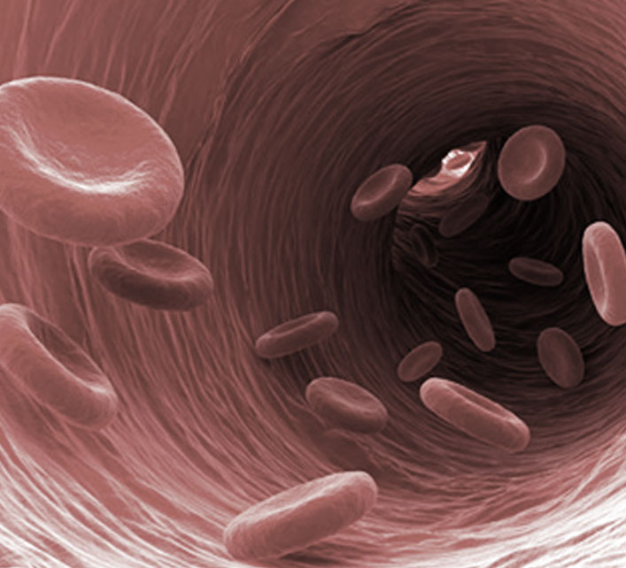

发布时间：2016-01-13
日前，广西大学举办“信仰的力量”——学习宣传贯彻习近平总书记系列重要讲话精神“四讲四信”主题沙龙活动。团
中央学校部相关负责同志 、共青团广西区委副书记刘玄启出席活动，广西大学团学干部、青年教师及来自各理论学习社团的青年学生150余人参加了活动。
活动以《信仰》主题视频引入，围绕青年人应该有怎样的信仰、如何坚定信仰以及通过信仰的引导与支撑实现个人成长进行讨论交流。共分为“信仰的旗帜”、“信仰的播撒”、“信仰的榜样”三个环节进行。青年学生、社团成员、团学干部、思政教学老师等方面代表作为访谈嘉宾，结合自己的角色定位和成长经历与大家开展分享和探讨。此次活动作为广西共青团“团学微论坛O2O主题活动”的一部分，活动现场设置了新媒体互动平台，实现场内场外青年学生开展线上线下交流。
在谈到青年学生应该树立怎样的信仰时，广西大学研究生支教团成员耿卓结合自己学生干部和支教团成员的经历，认为服务和奉献就是作为一名党员的职责；国防生陈凯奇分享了自己在艰苦枯燥严格的训练中所感受的信仰的力量，希望通过自己努力带动身边一群人，实现“强军梦”；新闻专业研究生王烁从自身专业出发，从如何传递网络正能量的角度分享了新闻媒体人应该如何树立正确的马克思主义新闻观的看法。
随后，社团骨干和指导老师与大家共同探讨了如何发挥社团的作用，在青年学生中推进“四进四信”活动、播撒“信仰”的种子。理论学习社团代表、唯理社成员黄欢和学校社团联合总会会长刘友能向大家介绍了开展“四进四信”活动进社团专项系列主题活动的基本情况和取得成效；政治学院团委书记郭世平分享了指导社团树立正确信仰并积极实践的经验。